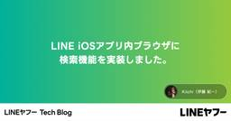

LINEヤフー Tech Blog (LY Corporation Tech Blog
https://techblog.lycorp.co.jp
LINEヤフー株式会社のサービスを支える、技術・開発文化を発信しています。
フィード

AIコーディング：「Vibe Coding」からプロフェッショナルへ 13
13
LINEヤフー Tech Blog (LY Corporation Tech Blog
はじめに本記事は、Tech-Verse 2025で発表予定の内容を詳しくまとめたものです。個人の実践経験をもとに、AIコーディングの現場で得た知見や手法を紹介します。AIコーディングを進めるにあたり、...
4日前

LINE iOSアプリ内ブラウザに検索機能を実装しました。
LINEヤフー Tech Blog (LY Corporation Tech Blog
はじめにこんにちは、iOSアプリエンジニアのKiichiです。こちらの記事で紹介されている通り、今年の3月に、LINEアプリ内ブラウザ上からYahoo!検索できる機能がリリースされました。本記事では、...
5日前
2025年7月の技術系イベント予定
LINEヤフー Tech Blog (LY Corporation Tech Blog
LINEヤフー株式会社では、技術に関するイベントや勉強会の主催・協賛などを行っています。最新情報は各リンク先でご確認ください。タイミングによっては、申し込み開始前や既に満席となっていることがあります。...
7日前
大規模AIリアルタイム埋め込みデータの効率的な扱い方 1
LINEヤフー Tech Blog (LY Corporation Tech Blog
こんにちは。LINE VOOM AI組織のサーバー開発者、Chan Woo ParkとYousung Yangです。本記事ではAIに使用されるリアルタイム埋め込みを提供するサーバーを構築するにあたり、...
7日前

LINE iOSアプリへのscene-basedライフサイクルの導入
LINEヤフー Tech Blog (LY Corporation Tech Blog
はじめにLINEアプリ開発本部モバイル・ディベロッパーエクスペリエンスチームのまつじです。WWDC25が開催され、新しいデザイン言語として"Liquid Glass"が登場し、大きな話題になりました。...
11日前
LINEヤフーの技術カンファレンス、開催します（6/30〜7/1）
LINEヤフー Tech Blog (LY Corporation Tech Blog
2025年6月30日（月）と7月1日（火）の2日間、技術カンファレンス「Tech-Verse 2025」を開催いたします。エンジニア・デザイナー・プロダクトマネージャーのための技術カンファレンスです。...
14日前
サービスの垣根を超えて爆速キャッチアップ！Extended Tokyo - WWDC 2025を開催しました！
LINEヤフー Tech Blog (LY Corporation Tech Blog
こんにちは。Yahoo!乗換案内のiOSアプリ開発を担当している山田です。LINEヤフー株式会社では毎年、WWDCをさらに楽しむイベントとしてExtended Tokyo - WWDCを開催しています...
14日前
MCPの概念とLINE Messaging APIを利用したMCPサーバー構築事例の紹介
LINEヤフー Tech Blog (LY Corporation Tech Blog
はじめに先日、Anthropic社はClaude LLMを通じてモデルコンテキストプロトコル（Model Context Protocol、以下MCP）を発表しました。MCPは、大型言語モデル（lar...
18日前
Reactコンポーネントのレンダリング最適化（UTS Portalでの具体的事例）
LINEヤフー Tech Blog (LY Corporation Tech Blog
LINEヤフー プロダクトストラテジ部の江口です。普段はバックエンドエンジニアとして業務に関わっていますが、今回はReact.jsについての記事を執筆します。この記事では私たちが開発する「UTS Po...
18日前
AIエージェント開発への探求 - パート3：サブエージェントとMCPの深掘り
LINEヤフー Tech Blog (LY Corporation Tech Blog
AIエージェント開発の個人的な研究と知見の共有本記事は3部構成です。パート1：アーキテクチャの理解と実装アプローチパート2：Central Agentの内部詳細パート3：サブエージェントとMCPの深掘...
19日前
AIエージェント開発への探求 - パート2：Central Agentの内部詳細
LINEヤフー Tech Blog (LY Corporation Tech Blog
AIエージェント開発の個人的な研究と知見の共有本記事は3部構成です。パート1：アーキテクチャの理解と実装アプローチパート2：Central Agentの内部詳細（本記事）パート3：サブエージェントとM...
20日前
AIエージェント開発への探求 - パート1：アーキテクチャの理解と実装アプローチ
LINEヤフー Tech Blog (LY Corporation Tech Blog
AIエージェント開発の個人的な研究と知見の共有本記事は3部構成です。パート1：アーキテクチャの理解と実装アプローチ（本記事）パート2：Central Agentの内部詳細パート3：サブエージェントとM...
21日前
オープンチャットハッシュタグ予測のためのマルチラベル分類モデルを開発
LINEヤフー Tech Blog (LY Corporation Tech Blog
はじめにこんにちは。AI Services LabチームのMLエンジニアHeewoong Parkです。私たちのチームでは、オープンチャットに関するさまざまなAI/MLモデルを開発し、提供しています。...
21日前
東南アジア・東アジアで流行している偽LINEインストーラーの解析結果
LINEヤフー Tech Blog (LY Corporation Tech Blog
こんにちは。CISO管掌の脅威情報分析対応チームでセキュリティエンジニアとして活動している首浦です。今回は、2025年5月17日に開催されたセキュリティカンファレンスBSides Tokyoにて発表し...
25日前
KubeCon + CloudNativeCon Japan 2025にプラチナスポンサーとして協賛し、5名の社員が登壇します
LINEヤフー Tech Blog (LY Corporation Tech Blog
LINEヤフー株式会社（以下、LINEヤフー）は、2025年6月16日（月）～17日（火）に、コンテナ技術の推進と、その進化を取り巻くテクノロジー業界の連携を支援する非営利団体Cloud Native...
1ヶ月前
Yahoo!広告ディスプレイ広告におけるABテスト実践：デルタ法、AAテストシミュレーション、検出力分析の自動化
LINEヤフー Tech Blog (LY Corporation Tech Blog
導入こんにちは、LINEヤフーの広告プロダクトのサイエンス部に所属している高橋、鈴木、中村です。新しい施策をプロダクトに導入する際、皆さんはどのようにその効果を評価していますか？多くの場合、一部の本番...
1ヶ月前
JJUG CCC 2025 SpringにLINEヤフーのエンジニア2名登壇します（6/7）
LINEヤフー Tech Blog (LY Corporation Tech Blog
2025年6月7日（土）に開催される「JJUG CCC 2025 Spring」にて、LINEヤフー株式会社はセッションスポンサーおよびブーススポンサーを務めます。協賛ブースでは、LINEヤフーのサー...
1ヶ月前
LINE App iOSエンジニアがAndroid開発を始めた話
LINEヤフー Tech Blog (LY Corporation Tech Blog
こんにちは。LINEアプリの公式アカウント開発を担当している諏訪と楊です。この記事では、LINE Appの開発を進める上でAndroidの開発者のリソース問題を解決するため、iOSエンジニアがAndr...
1ヶ月前
GW中に行った技術キャッチアップや個人開発を発表するLT会を開催しました！
LINEヤフー Tech Blog (LY Corporation Tech Blog
5月16日に紀尾井町オフィスにて、GWに行った技術キャッチアップや個人開発の成果発表LT会を開催しました。イベントの規模を所属部署のメンバー限定にする事で、登壇者の心理的ハードルを下げ気軽に発表できる...
1ヶ月前
TSKaigi 2025にLINEヤフーのエンジニアが3名登壇します（5/23・5/24）
LINEヤフー Tech Blog (LY Corporation Tech Blog
こんにちは！フロントエンドエンジニアのodanです。2025年5月23日と5月24日に開催されるTSKaigi 2025にて、LINEヤフー株式会社のエンジニア3名のプロポーザルが採択されました。本ブ...
1ヶ月前
2025年6月の技術系イベント予定
LINEヤフー Tech Blog (LY Corporation Tech Blog
LINEヤフー株式会社では、技術に関するイベントや勉強会の主催・協賛などを行っています。最新情報は各リンク先でご確認ください。タイミングによっては、申し込み開始前や既に満席となっていることがあります。...
1ヶ月前
NordiCHI 2024 参加報告：天気予報の「当たりやすさ」のギャップに対処するYahoo!天気の取り組み
LINEヤフー Tech Blog (LY Corporation Tech Blog
こんにちは。メディア統括本部でUXリサーチを担当している日置と、LINEヤフー研究所の池松です。私たちは2024年10月13日から16日にかけて開催されたHuman-Computer Interact...
1ヶ月前
Yahoo!ショッピング：データ基盤における次世代クエリエンジン（Spark/Trino）移行の取り組みについて
LINEヤフー Tech Blog (LY Corporation Tech Blog
はじめに本ブログシリーズでは、Yahoo!ショッピングのデータ分析基盤を最適化するために取り組んだ大規模プロジェクト――Apache HiveからTrinoとApache Sparkへの移行――につい...
2ヶ月前
マルチプラットフォームのドキュメントを管理する一つの方法、シングルソーシング
LINEヤフー Tech Blog (LY Corporation Tech Blog
こんにちは。LINE Plus Tech Content StrategyチームのSung Chang Haです。私たちのチームはテクニカルライターで構成されています。LINE Plusで開発したさま...
2ヶ月前
コード品質向上のテクニック：第69回 コード品質のための My tips
LINEヤフー Tech Blog (LY Corporation Tech Blog
こんにちは。コミュニケーションアプリ「LINE」のモバイルクライアントを開発している石川です。この記事は、"Weekly Report" 共有の連載の第 69 回です。LINEヤフー社内には、高い開発...
2ヶ月前
try! Swift Tokyo 2025にブース出展しました！
LINEヤフー Tech Blog (LY Corporation Tech Blog
こんにちは、iOSエンジニアのyamakenです。2025年4月9日（水）から11日（金）の3日間にわたり開催された、try! Swift Tokyo 2025に、LINEヤフー株式会社はGOLDスポ...
2ヶ月前
信頼性向上のためのSLI/SLO導入vol.2 - プラットフォームへの導入事例
LINEヤフー Tech Blog (LY Corporation Tech Blog
はじめにこんにちは。Enablement EngineeringチームでSRE（site reliability engineer）業務を担当しているDahee Eoです。私たちのチームは、LINEサ...
2ヶ月前
コード品質向上のテクニック：第68回 諸刃のテスト
LINEヤフー Tech Blog (LY Corporation Tech Blog
こんにちは。コミュニケーションアプリ「LINE」のモバイルクライアントを開発している石川です。この記事は、毎週木曜の定期連載 "Weekly Report" 共有の第 68 回です。 LINEヤフー社...
2ヶ月前
2025年5月の技術系イベント予定
LINEヤフー Tech Blog (LY Corporation Tech Blog
LINEヤフー株式会社では、技術に関するイベントや勉強会の主催・協賛などを行っています。最新情報は各リンク先でご確認ください。タイミングによっては、申し込み開始前や既に満席となっていることがあります。...
2ヶ月前
信頼性向上のためのSLI/SLO導入vol.1 - 紹介と必要性
LINEヤフー Tech Blog (LY Corporation Tech Blog
はじめにこんにちは。SRE（site reliability engineering、サイト信頼性エンジニアリング）業務を担当しているEnablement EngineeringチームのDahee E...
2ヶ月前
コード品質向上のテクニック：第67回 過ぎたるエラーは猶及ばざるが如し
LINEヤフー Tech Blog (LY Corporation Tech Blog
こんにちは。コミュニケーションアプリ「LINE」のモバイルクライアントを開発している石川です。この記事は、毎週木曜の定期連載 "Weekly Report" 共有の第 67 回です。 LINEヤフー社...
2ヶ月前
H3の魔法で地理ポリゴンを制覇せよ！空間インデックスの力
LINEヤフー Tech Blog (LY Corporation Tech Blog
こんにちは！出前館開発本部のロバートです。現在、出向先の出前館で地理情報サービスの開発に携わっています。出前館では、位置情報（例えば、緯度経度）を基に関連するデータを検索したい場面が多くあります。典型...
3ヶ月前
コード品質向上のテクニック：第66回 アサートあっても憂いあり
LINEヤフー Tech Blog (LY Corporation Tech Blog
こんにちは。コミュニケーションアプリ「LINE」のモバイルクライアントを開発している石川です。この記事は、毎週木曜の定期連載 "Weekly Report" 共有の第 66 回です。 LINEヤフー社...
3ヶ月前
LINEヤフーにおける『GitHub Copilot』の利用推進の取り組み
LINEヤフー Tech Blog (LY Corporation Tech Blog
こんにちは。GitHub Copilot Meetupイベントを運営している河本です。本記事では、LINEヤフーの Developer Relations が行っている GitHub Copilot ...
3ヶ月前
LLMアプリの作成からテストとデプロイまで、LLMOpsの構築事例の紹介
LINEヤフー Tech Blog (LY Corporation Tech Blog
LLMOpsとは？近年、GPT-4のような大規模言語モデル（large language model、以下LLM）の使用が普及し、それを活用したアプリケーションの開発が活発に行われています。たとえば、...
3ヶ月前
大規模iOSプロジェクトのDocCをホスティングする技術
LINEヤフー Tech Blog (LY Corporation Tech Blog
こんにちは、コミュニケーションアプリ「LINE」のiOSクライアントアプリにおいて開発基盤を担当している、モバイル・ディベロッパーエクスペリエンスチーム所属のfreddiです。最近、LINEのiOSプ...
3ヶ月前
技術評論社の編集者を招いて「本を出すきっかけ」の作り方を聞いてみた
LINEヤフー Tech Blog (LY Corporation Tech Blog
こんにちは、Dev Contentチームのmochikoです。LINEヤフー株式会社で開発者向けのドキュメントを書くテクニカルライターとして働く傍ら、個人としても技術書を書いて出しています。先日、IT...
3ヶ月前
try! Swift Tokyo 2025 にLINEヤフーのエンジニア2名登壇します（4/10・4/11）
LINEヤフー Tech Blog (LY Corporation Tech Blog
2025年4月9日（水）から11日（金）の3日間にわたり開催される、try! Swift Tokyo 2025にて、LINEヤフー株式会社はGOLDスポンサーを務めます。協賛ブースでは、Kahoot!...
3ヶ月前
コード品質向上のテクニック：第65回 Collection は List だけにして成らず
LINEヤフー Tech Blog (LY Corporation Tech Blog
こんにちは。コミュニケーションアプリ「LINE」のモバイルクライアントを開発している高梨です。この記事は、毎週木曜の定期連載 "Weekly Report" 共有の第 65 回です。 LINEヤフー社...
3ヶ月前
LINE iOSアプリの快適なデバッグ体験を求めて - LLDBの安定性とパフォーマンス改善
LINEヤフー Tech Blog (LY Corporation Tech Blog
LINEアプリ開発本部 モバイル・ディベロッパーエクスペリエンスチームの@giginetです。皆さん、デバッグしてますか？ LINE iOSアプリでは、Xcode 16から、デバッガの式評価が失敗した...
3ヶ月前
みんなのためのLLMアプリケーション開発環境の構築事例
LINEヤフー Tech Blog (LY Corporation Tech Blog
はじめにこんにちは。Game Platform DevのDong Hun Ryoo、Takenaka、Zhang Youlu（Michael）、Hyungjung Leeです。私たちの組織は、ゲームパ...
3ヶ月前
コード品質向上のテクニック：第64回 プライマリコンストラクタはシンプルにする
LINEヤフー Tech Blog (LY Corporation Tech Blog
こんにちは。コミュニケーションアプリ「LINE」のモバイルクライアントを開発している大石です。この記事は、毎週木曜の定期連載 "Weekly Report" 共有の第 64 回です。 LINEヤフー社...
3ヶ月前
2025年4月の技術系イベント予定
LINEヤフー Tech Blog (LY Corporation Tech Blog
LINEヤフー株式会社では、技術に関するイベントや勉強会の主催・協賛などを行っています。最新情報は各リンク先でご確認ください。タイミングによっては、申し込み開始前や既に満席となっていることがあります。...
3ヶ月前
GitHub 1000 Stars 達成も！フロントエンド領域におけるLINEヤフーのオープンソース活動 2024
LINEヤフー Tech Blog (LY Corporation Tech Blog
こんにちは。フロントエンドエンジニアの花谷です。LINEヤフーでは、さまざまな技術領域でオープンソースソフトウェアやコミュニティへの貢献を行っています。オープンソースへの貢献の形としては新規ソフトウェ...
3ヶ月前
LINEヤフーのAIプラットフォームにおけるバッチスケジューリング戦略
LINEヤフー Tech Blog (LY Corporation Tech Blog
こんにちは。LINEヤフーでAIプラットフォーム向けのKubernetesクラスタの設計や構築、運用を担当している大村です。LINEヤフーでは、100を超えるサービス向けにAI/機械学習を活用したサー...
3ヶ月前
コード品質向上のテクニック：第63回 値の裏切り
LINEヤフー Tech Blog (LY Corporation Tech Blog
こんにちは。コミュニケーションアプリ「LINE」のモバイルクライアントを開発している高梨です。この記事は、毎週木曜の定期連載 "Weekly Report" 共有の第 63 回です。 LINEヤフー社...
3ヶ月前
能登・支援者向け宿泊施設サイトを支える技術
LINEヤフー Tech Blog (LY Corporation Tech Blog
こんにちは。この記事は、SWATメンバーである今谷、奥村、杉山、祐村、早坂の5人が、能登半島での宿泊施設情報サイトのリリースをサポートしたプロボノ活動について、その技術的背景をご紹介します。SWATと...
4ヶ月前
コード品質向上のテクニック：第62回 二匹目の close
LINEヤフー Tech Blog (LY Corporation Tech Blog
こんにちは。コミュニケーションアプリ「LINE」のモバイルクライアントを開発している石川です。この記事は、毎週木曜の定期連載 "Weekly Report" 共有の第 62 回です。 LINEヤフー社...
4ヶ月前
DroidKaigi 2024 Code Bug Fix Challenge 4問目
LINEヤフー Tech Blog (LY Corporation Tech Blog
こんにちは。AndroidアプリエンジニアのOishi、Yamada、Murakamiです。先日開催されたDroidKaigi 2024のLINEヤフー企業ブースでは、「Code Bug Fix Ch...
4ヶ月前
LINEヤフー × Deno Land Inc. Meetup 〜次世代ランタイム×フロントエンドの将来性〜 開催レポート
LINEヤフー Tech Blog (LY Corporation Tech Blog
こんにちは！ LINEスキマニのフロントエンド開発や、フロントエンド開発に関するイベントの運営をしている板井 俊樹（@itatchi3_）です。LINEスキマニでは、フロントエンド開発業務にDenoを...
4ヶ月前